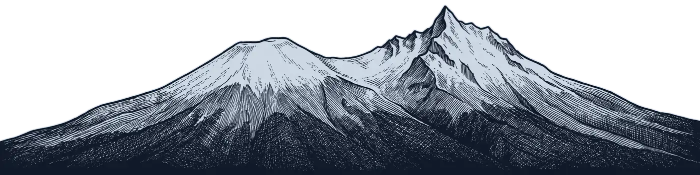
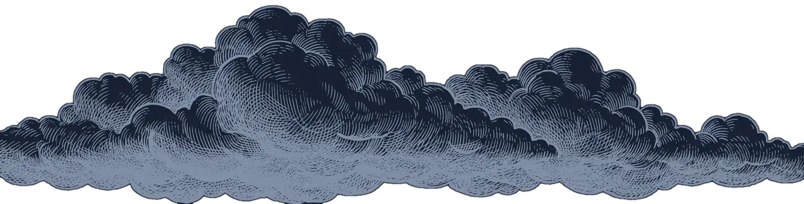
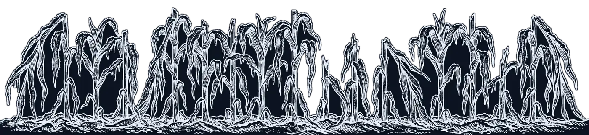
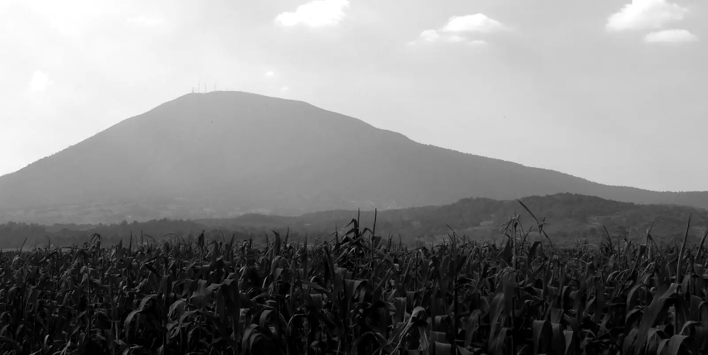

Maíz de temporal · Valles de Toluca, Ixtlahuaca y Atlacomulco Prototipo, octubre de 2026
Aviso de helada para su parcela, por WhatsApp
Helada corrige el pronóstico de esta noche para cada parcela de maíz de temporal y avisa al productor con una nota de voz.



Ejemplo del aviso
- −2 °C
- Su parcela, esta noche
- 70 %
- Probabilidad de helada
El Nevado de Toluca, el maíz helado y las nubes son grabados generados con IA, no fotografías. El cielo pasa por nubes, lluvia, una noche despejada con helada y el amanecer.
Así llega el aviso
❄️ Aviso de Helada · P-07 (Almoloya de Juárez) (Borrador sin firma agronómica)
Esta noche: probabilidad de helada 70%. Su parcela −2 °C (rango −4 a 0 °C).
Proteja sus cultivos esta noche.
Responda 1 para más. BAJA = salir.
El productor escucha el aviso en una nota de voz y lo lee en el mismo mensaje: la probabilidad de helada, la temperatura de su parcela con su rango, una acción y la palabra para dejar de recibirlo. Helada también funciona en el teléfono, sin señal.
Es un prototipo. Los nombres, teléfonos y parcelas de la demostración son ficticios.
En el valle hiela más de cien días al año, y el pronóstico gratuito casi no avisa
Más de 100
días con helada al año en el distrito de Toluca. En la temporada 2019, la helada se llevó 3,511 ha de maíz de temporal, según una estimación con imágenes de satélite.
Jasso-Miranda, Soria-Ruiz y Antonio-Némiga, Rev. Mex. Cienc. Agríc. 13(2), 2022.
1 de cada 4
noches de helada alcanza a detectar el pronóstico regional gratuito, que además marca 1.5 °C de más en las estaciones.
Medición del equipo: 39 estaciones del SMN, temporada 2025-26.
10 días
naturales tiene el productor para avisar del daño al programa estatal (PASACME), que después lo verifica en la parcela.
Lineamientos PASACME, Gaceta del Gobierno núm. 114, 2024.
Qué hace Helada
- Aviso de helada
- Un modelo pequeño corrige el pronóstico de esta noche para cada parcela con lo que han medido las estaciones, y calcula la probabilidad de helada. El productor la escucha en una nota de voz por WhatsApp entre las 18:00 y las 20:00, a lo más dos veces por semana.
- Calendario de siembra
- Las fechas de helada de cada parcela ayudan a elegir la fecha de siembra y el ciclo de la variedad. Si el maíz está en floración, un aviso esa misma tarde rara vez salva el cultivo, y Helada lo dice.
- Paquete de pérdida
- Una nota de voz y unas fotos se convierten en un PDF con la parcela, la fecha, la ubicación, la temperatura calculada y la observada, y la lista de documentos del programa. Solo dice «Documentos completos» o «Falta: X». Nunca decide si procede el apoyo: eso lo decide la Secretaría del Campo, en la parcela.
De cada 100 noches de helada, cuántas se avisan
Cada cuadro es una noche de helada. Los cuadros llenos son las noches que el método avisó. Los dos métodos dan las mismas falsas alarmas: 5 de cada 100 noches sin helada.
Parcela cerca de una estación del SMN
Con Helada se avisan 57.9% de las noches de helada, contra 24.3% del pronóstico. Una hoja de cálculo con una corrección por estación llega a 36.2%.
Parcela sin estación cerca
Lejos de una estación, Helada no detecta mejor la helada (32.4% contra 32.1%). Solo quita el sesgo cálido del pronóstico: el error baja de 2.83 a 2.32 °C, y el rango que muestra es más amplio. Para ganar precisión hacen falta termómetros registradores en unas 5 parcelas por ejido.
Cerca de una estación: temporada 2025-26, que el modelo no vio al entrenarse; 39 estaciones del SMN, 5,855 noches, 503 con helada. «Cerca» quiere decir a menos de 1.5 km y 50 m de altitud. Sin estación cerca: 80 estaciones apartadas del entrenamiento, temporadas 2024-25 y 2025-26, 19,592 noches. El dato real es la temperatura en la caseta de la estación, no en el cultivo.
Un modelo de 372 KB que corre en el teléfono
El modelo de helada pesa 372 KB. Corre en el servidor y también en el teléfono del productor, en una página que se instala y funciona sin señal. La versión del teléfono da el mismo resultado que la original: menos de 0.005 °C de diferencia en 204 casos de prueba.
Sin señal, el teléfono guarda las lecturas y los reportes, y los manda cuando la señal regresa.
- 372 KB el modelo de helada, en el teléfono y en el servidor
- Cerca de 1 MB la página del teléfono completa
- 486 MB la voz a texto, que corre en el servidor y no en el teléfono. Se probó con 12 notas de voz sintéticas, no con productores
- Reglas fijas para leer un reporte de daño: ahí la IA no les ganó, y no la usamos
Una persona decide en cada paso
No estoy seguro
Pregunte a su técnico antes de decidir.
El teléfono lo dice así cuando no hay pronóstico guardado, cuando el pronóstico es viejo, cuando faltan datos o cuando no hay estación cerca en una noche fría. Una palabra, BAJA, detiene todos los avisos.
- Qué hacer con el aviso
- Lo decide el productor.
- Cuando falta información
- Lo decide el técnico.
- El apoyo por pérdida
- Lo decide la Secretaría del Campo, con visita a la parcela.
- Las recomendaciones
- Un agrónomo debe firmarlas. Hasta entonces dicen «Borrador sin firma agronómica».
Lo que todavía falta
- La mejora solo está medida cerca de estaciones del SMN.
- El reconocimiento de voz no se ha medido con productores reales.
- El mazahua todavía no está disponible.
- No hay paso de consentimiento al inscribirse ni borrado de datos a petición.
- El envío por WhatsApp Business no se ha probado en una cuenta real.

Para oficinas agrícolas y aliados
El siguiente paso es un ejido durante una temporada de heladas: 5 termómetros registradores (unos MX$3,300), un padrón con consentimiento, la firma de un agrónomo y un acuerdo con la Secretaría del Campo sobre cómo recibir un paquete digital.
El mismo sistema ya corre para papa en Puno, Perú, solo con el pronóstico y sin afirmar ninguna mejora: allá la precisión también hay que ganarla con mediciones locales.
US$1.20
por productor el primer año, y después de US$0.15 a US$0.30 por temporada.
Son estimaciones. Incluyen mensajes, el equipo de la oficina y los termómetros. No incluyen el tiempo de extensionistas y agrónomos, que es el costo mayor.